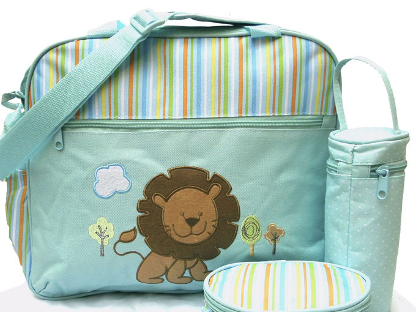
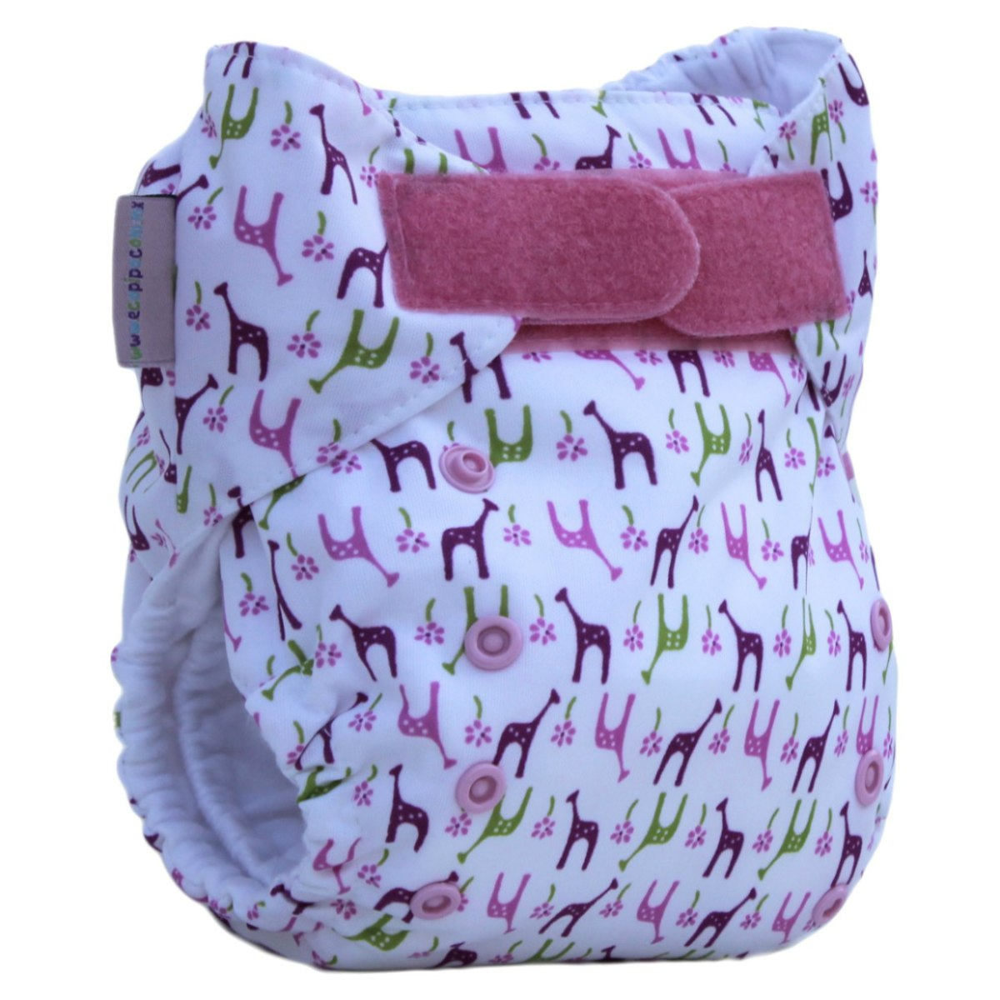
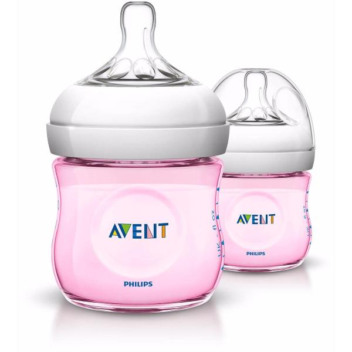

Pañalera
El nacimiento de un bebé es motivo de alegría tanto para los nuevos padres, como para sus familiares, amigos y allegados. Por eso una de las mejores formas de celebrar tal acontecimiento es dando un obsequio que sea útil, y que a su vez pueda ser disfrutado por los futuros padres y el nuevo integrante de la familia.A continuación encontrarás una lista de regalos útiles para los padres y apropiados para el bebé. ¿Cuáles son los regalos que consideras, son los mejores?

Pañales
Un pañal es una prenda absorbente usada para higienizar y evitar la contaminación del entorno a causa de los desperdicios de un organismo. Suelen usarlo bebés y adultos que aún no tienen o han perdido la capacidad de controlar sus desechos (orina y/o heces). O son incapaces de encontrar un lugar donde depositar los mismos. Esto aplica tanto a personas que no pueden llegar a tiempo a un baño o no es accesible el mismo, tal es el caso de los astronautas, buzos, etc.

Teteros
El biberón, mamadera (en México, Paraguay, Argentina y Chile), mema (en Uruguay), mamila (en México), pepe (en Honduras), chupón (en Costa Rica), pacha (en El Salvador , Nicaragua y Guatemala), o tetero (en Colombia y Venezuela) es un recipiente que se utiliza para dar leche, agua y demás líquidos a los bebés o niños, que por su nivel de desarrollo psicomotor no puedan beber en un vaso. Los hay de diferentes volúmenes (de 100 ml, de 250 ml, etc.). El biberón se compone de un tubo, actualmente de plástico, y de una tapadera sellable herméticamente provista de una tetina flexible adaptable a la boca del infante, que tiene un agujero pequeño por cual el niño bebe, absorbiendo el líquido.